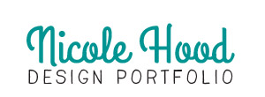

Education
- University of Miami, 2012-Present
- Attending junior year of undergraduate studies at the University of Miami.
- Studying Studio Arts with a concentration in Graphic Design, International Studies, Religion, and General Communication Studies.
- Gulliver Preparatory, 2008-2012
Related Skills
- Adobe Photoshop
- Adobe Illustrator
- Adobe InDesign
- HTML
- CSS
Experience
- Belly Motions, Intern, Miami, FL, November 2013-March 2014
- Maintain dance studio
- Manage merchandise
- (4 hrs/wk)
- Ceramic League, Volunteer, Miami, FL, June-August 2012
- Teach children ages 4-12 handbuilding and throwing
- Clean/organize workshop
- (20 hrs/wk)
- Coral Reef Yacht Club, Volunteer, Miami, FL, June-August 2011
- Teach children ages 4-16 the basics of sailing in Opti's and 420s
- Rigging/derigging and cleaning boats
- Preparing pickup/dropoff
- Organizing mealtime
- (40 hrs/wk)
- University of Miami Diving, Volunteer, Miami, FL, June-August, 2008, 2009
- Teach children ages 5-15 basics of springboard diving
- Organize mealtime
- Organize pre-practice workout
- (20 hrs/wk)